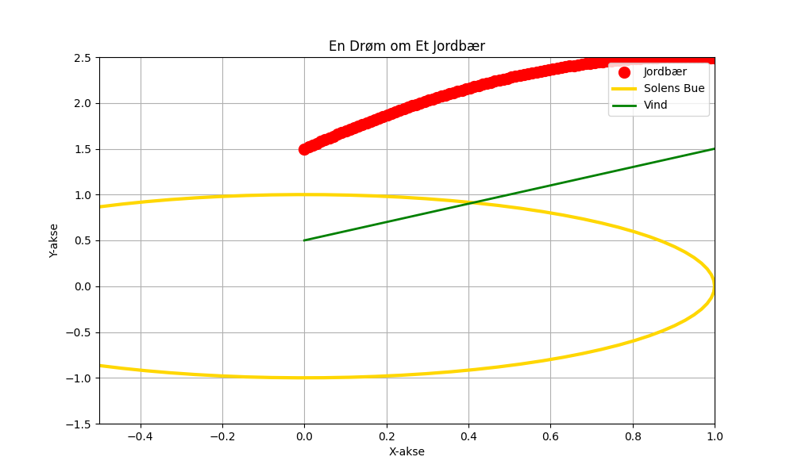

Et lite jordbær i en sky, svømt av drømmer, søtt som ly. Det ler i solens gullblå bue, og danser med vinden – stille, ny.

import matplotlib.pyplot as plt
import numpy as np
# Dikt
dikt = """
Et lite jordbær i en sky,
svømt av drømmer, søtt som ly.
Det ler i solens gullblå bue,
og danser med vinden – stille, ny.
"""
# Generer data for jordbær-posisjon (eksperimentell)
x = np.linspace(0, 1, 100)
y = np.sin(x) * 2 + np.cos(x) * 1.5 # Simulerer jordbær i en sky
# Generer data for solens bue
theta = np.linspace(0, 2 * np.pi, 100)
x_sol = np.cos(theta)
y_sol = np.sin(theta)
# Generer data for vind (enkel linje)
vind_x = np.linspace(0, 1, 100)
vind_y = vind_x + 0.5
# Lag figur
fig = plt.figure(figsize=(10, 6))
ax = fig.add_subplot(111)
# Plott jordbær
ax.plot(x, y, 'ro', markersize=10, label='Jordbær')
# Plott solens bue
ax.plot(x_sol, y_sol, 'gold', linewidth=3, label='Solens Bue')
# Plott vind
ax.plot(vind_x, vind_y, 'g-', linewidth=2, label='Vind')
# Legg til akser og tittel
ax.set_xlabel('X-akse')
ax.set_ylabel('Y-akse')
ax.set_title('En Drøm om Et Jordbær')
ax.grid(True)
ax.legend()
# Juster plot-området
ax.set_xlim([-0.5, 1.0])
ax.set_ylim([-1.5, 2.5])
# Lagre figuren
plt.savefig(output_path)execution_ok=True fallback_used=False image_ok=True